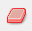

Máscara de color
- Insertamos una imagen a un proyecto de Gimp con Archivo → Abrir, como hemos hecho en prácticas anteriores. Y, por supuesto, guardamos el proyecto con Archivo → Guardar como... Tutorial 6.xcf
- Activamos la herramienta Máscara rápida . No es evidente su ubicación dentro de la zona de trabajo de Gimp, ya que la misma se encuentra en la esquina inferior izquierda de esta, pero puede accederse a ella con la combinación de teclas Mayús + Q. Vemos que aparece un velo de color rojo superpuesto a nuestra imagen.
- Tomamos la herramienta Borrador  y vamos eliminando aquellas zonas que queremos cambiar a otro color. En nuestro caso, como vamos a cambiar el color del cabello de la niña, es conveniente apoyarnos en las teclas + y - para ampliar el dibujo y cambiar el tamaño del borrador para perfeccionar aquellas zonas de difícil acceso. De nuestra pericia en conseguir borrar esas pequeñas zonas dependerá la perfección de nuestro trabajo.
- Desactivamos la Máscara rápida cuando hayamos acabado y veremos que las zonas eliminadas aparecen en modo vibración.
- El nuevo paso consistirá en elegir la combinación de colores del cabello de la chica con Colores → Balance de color. Ahí deberemos deberemos Ajustar los niveles de color de Cian, Magenta y Amarillo (moviendo los cursores respectivos a derecha o izquierda) hasta conseguir el color deseado.
- Aceptamos y es el momento de exportar la imagen como Tutorial 6.png
La imagen de partida siguiente:

La lista de reproducción con todos los vídeos que se han elaborado para este recurso educativo, se encuentra disponible en este enlace.